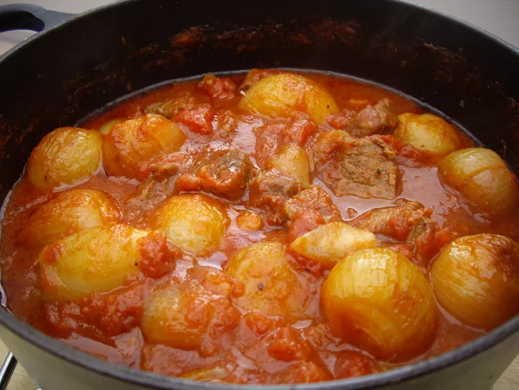

Slow Cooker Beef Stifado

Chunks of tender beef are cooked with shallots in a rich, aromatic tomato sauce. Serve with boiled rice and a good supply of crusty bread to mop up the decadent sauce!
Ingredients
- 3 tablespoons olive oil, divided
- 2 pounds cubed beef stew meat
- 1 large onion, roughly chopped
- 2 cloves garlic, crushed
- 1 (14.5 ounce) can diced tomatoes
- 1 (3 inch) cinnamon stick
- 2 large bay leaves
- 1 sprig fresh rosemary
- 1 teaspoon ground nutmeg
- 1⁄16 teaspoon ground black pepper, or to taste
- salt to taste
- 1 cup red wine
- 2 tablespoons vinegar
- 2 tablespoons ketchup, or more to taste
- 1 pound baby shallots, peeled
Instructions
- Heat 2 tablespoons oil in a large skillet over high heat. Add beef, onion, and garlic; cook and stir until meat is browned on all sides and onion is translucent, 6 to 8 minutes. Add tomatoes, cinnamon stick, bay leaves, rosemary, pepper, and salt. Cook over medium heat, stirring occasionally, for about 3 minutes. Stir in wine and vinegar.
- Pour beef mixture into a slow cooker and stir in ketchup. Cover and cook on Low until beef is tender, 6 to 8 hours.
- Meanwhile, heat remaining 1 tablespoon oil in a skillet. Add shallots and sauté until soft, 3 to 4 minutes. Add cooked shallots to stew for the last 1 to 2 hours of cooking.
- Remove and discard cinnamon stick, bay leaves, and rosemary sprig before serving.